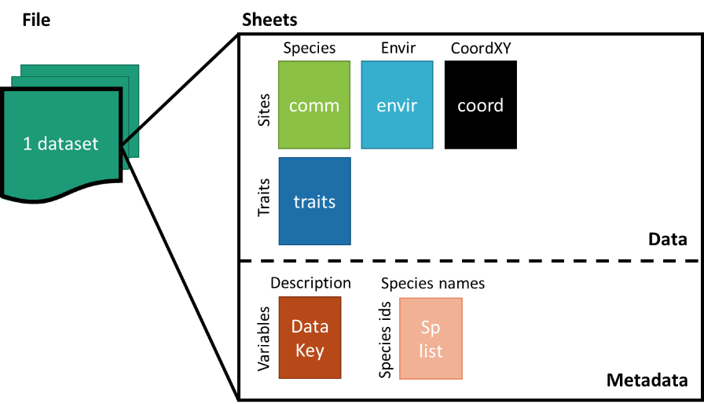
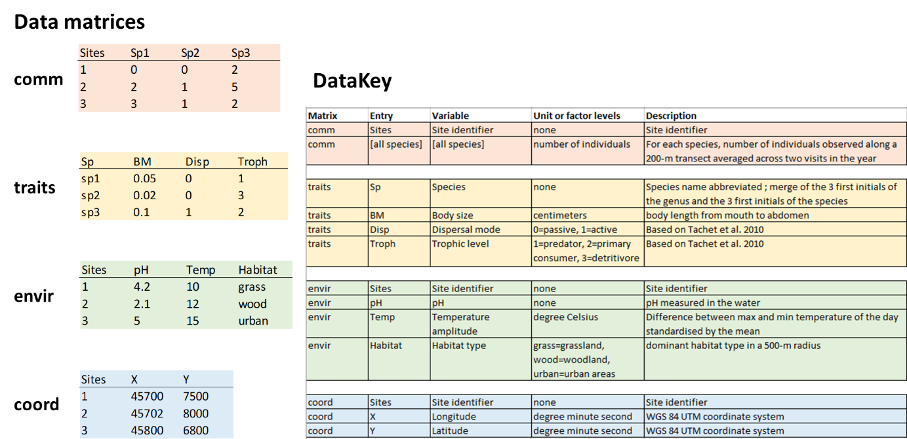

Photo by Brian McMahon on Unsplash.
- What are the eligibility criteria to the CESTES database?
- How to format your data?
- How to send your data?
- How will your contribution be acknowledged?
- Remarks.
1. Eligibility criteria
For your dataset to be eligible to the CESTES database, it has to include the following 4 data matrices:
- "comm": matrix of species (or any taxonomic unit) abundances/counts/density or presences/absences recorded in multiple sites (i.e. >= 10 sites) (for other cases, see 5. Remarks)
- "traits": a corresponding matrix of species trait information, i.e. any trait, be it functional, biological, life-history traits, either quantitative or categorical, functional group, etc., with traits related to the species which are reported in “comm”
- "envir": a corresponding matrix of environmental variables in the broad sense of environment, i.e. any type of biotic and abiotic conditions or habitat characteristics relevant to the community of interest according to the original study/project, with variables related to the sites which are reported in “comm”
- "coord": a corresponding matrix of spatial coordinates, with the longitude and the latitude of the sites which are reported in “comm” (in WGS84 Geographical Coordinate System)
AND to be formatted according to the guidelines provided below.
2. Formatting guidelines
Each dataset has to include:
- the four data matrices as described above: comm, traits, envir and coord
- a metadata table DataKey
- a species list splist corresponding to the species/taxonomic units recorded in “comm”.

a. Accepted file formats
Comma Separated Value files (.csv, .csv2) / spreadsheet files (.ods, .xls, .xlsx) / R objects (e.g. list, tibble)
b. Format of the metadata table DataKey
Each dataset has to be accompanied with a table (DataKey) that describes every data entry with the following information:
- Matrix: which matrix does the entry refers to, i.e. any one among comm, traits, envir and coord
- Entry: the spelling of the entry name as it was reported in the four data sheets
- Variable: the variable the entry name refers to
- Unit or factor levels: the scientific unit, type of variable and/or levels of factor of the variable
- Description: brief description of the variable or notes where relevant
Example of metadata structure with respect to the data matrices:

c. Format of the species list splist
The species list has to report the full name of the taxa that are recorded in the comm data matrix, along with the taxonomic list reference. Make sure that there is a common column linking comm and splist.
3. Sending the data
Send your file(s) + the reference to the original publication/project + affiliation + email contact via email to: cestes[at]idiv.de.
4. Database update and citation
If the new dataset fulfils CESTES’ requirements and is provided in the right format with the metadata information, it will be considered for integration to the CESTES database. The data will be integrated in the database and uploaded in the iDiv biodiversity data portal.
This will update the database and generate a new DOI for the whole updated database, ensuring that the new contributors are acknowledged. Finally, the new contributor becomes part of the CESTES consortium.
5. Remarks
- If your data:
- do not have spatial coordinates but have the other three pieces of information,
AND/OR
- do not have multiple site measurements (i.e. less than 10) but have temporal replicates,
it can be integrated in the non-spatial ancillary section of the CESTES database, ceste.
- If you are willing to share data that include individual-based trait measurements, this will be considered for the extended version of CESTES database that will be the subject of a new promising collaborative project.
If interested, please contact the database manager.